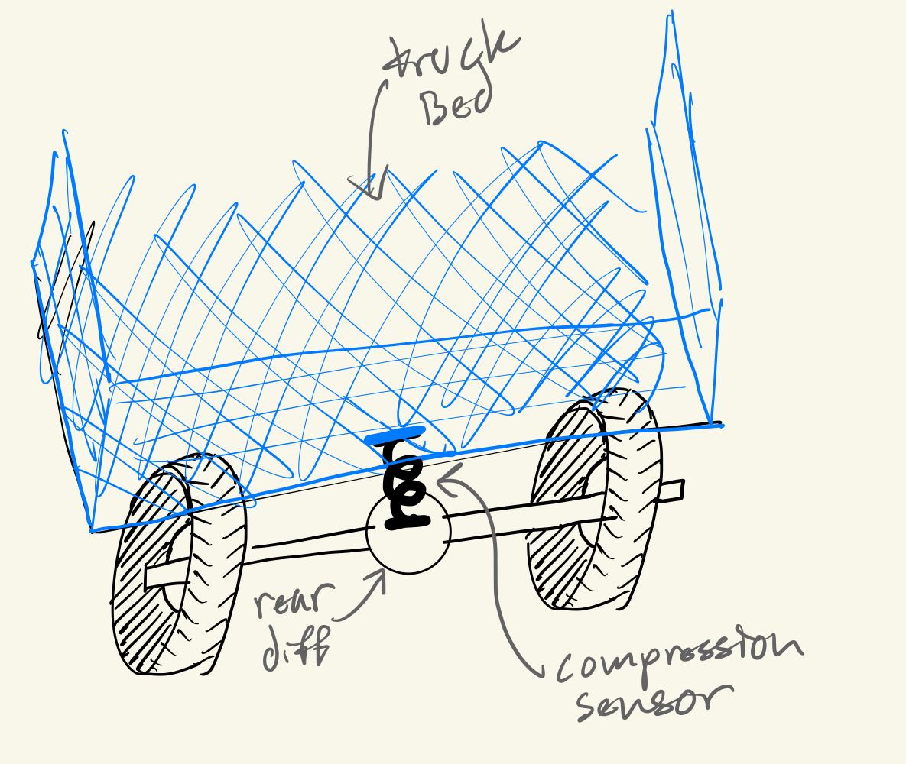

<div class="textcontainer">
<br></br>
<h3 style="color:darkblue;">Week 1: Final Project Proposal</h3>
<p class = "margin"></p>
<h3 style="color:darkblue">Final project ideas
<p class = "margin"></p>
<h4>Idea 1 : Bedscale</h4>
<p class = "margin"></p>
Hate when this happens <br>
<br>
In that case you need a the bedscale, a scale that measures how much wheight is in the bed of your truck and projects it directly to your dashboard. Never overload your truck again.
<br> <br> Design: <br>
There are a couple different design options that will get figured out throughout the semester. One option is measuring compression. In this case, a compression sensor could sit between the bottom of the bed and the top of the rear differential and measures the compression between these points as the bed is loaded. An alternative measurement system could be using infrared distance sensors. These coculd be placed inside each wheel well and measure the distance between the wheel well and the top of the tire which shrinks as the bed is loaded. In either scenario, the sensor could then project this distance or pressure to the dashboard screen where it is converted into a weight in pounds. <br>
<br> <br> Ideally, this project would be tested on an actual truck throughout design, but due to the lack of available trucks on campus and the cost of parking one, this is not feasible. Instead, testing will be conducted on an SUV, Nathans to be specific. This should work exactly the same way with either method of measurement, it is simply the ratio of distance or compression to pounds that would change from vehicle to vehicle.
<br> Testing will be done by loading consistent increments of weight into the trunk of the car and marking the distance or compression that each weight corresponds to. <br> <br>
 <br>
As you weight the bed of a truck, at either one of these locations, the distance will shrink and we can relate this amount of distance change or compression, to a weight value. <br>
Idealy this would be done on an actual truck, but given the difficulties of accessing a truck on campus testing will be conducted on Nathan's car. In principle this should work exactly the same. I will put known increments of weight into the trunk of his car and then check the distance readings. Doing this enough will generate a steady map of what distance equals what weight. Then it is just a matter of having the screen display the attatched weight value when a certain distance or compression is measured. Assuming it works, switching this device to a truck should be simple enough to recalibrate it with another round of weight testing and then changing the assigned values. Theoretically, this makes it a device that could be interchangeable among any car or truck as long as you are able to reweight each vehicle once initially for setup.
<p class = "margin"></p>
<br>
<h4 style="color:darkviolet;">Idea 2: Portable Solar/Wind/Hand Crank Powered Phone Charger </h4>
<p class = "margin"></p>
<span style="color:darkviolet"> Picture this: your phone is dead while at the beach or on a hike, you take out your portable charger, and you forgot to plug it in, or worse your friend drained it and left you stranded. <br>
<br>
Never let this happen again with the solar or wind or hand powered portable charger. If its sunny simply lay the charger down and let it do the work. If its windy, stand your mini turbine up and let it do the work. Or if there is no sun and no wind, simply crank the handle to generate electricity. Regardless of the weather, outlets, or chargers, always have a charged phone. <br>
<br> Design: <br>
Individually, each of these chargers would not be massively difficult to create, and each exists already. Putting them together however would be the challenge. I would this device to be relatively small and somehow unfold to reaveal each charging method. If and how this is possible would have to be figured out throughout the semester by creating different designs that could fit together while, move, and maintain functionality durability. </span> <br>
<br>
<p class = "margin"></p>
</div>